Executive Summary: This comprehensive analysis examines NYC bus routes serving CUNY campuses to identify optimal candidates for Automated Camera Enforcement (ACE) implementation. Using real ACE performance data showing an average +0.56 mph improvement, we have identified priority routes demonstrating significant potential for speed improvements, directly addressing the critical issue that 65% of CUNY students experience class lateness due to transportation challenges.
Quantify the impact of Automated Camera Enforcement (ACE) implementation on CUNY student commute times and identify optimal routes for deployment to reduce bus lane violations and improve service reliability.
MTA Open Data, NYC traffic violation database, comprehensive CUNY student survey with 185 validated responses across all boroughs.
Average mph improvement from actual ACE implementation data across 42 routes
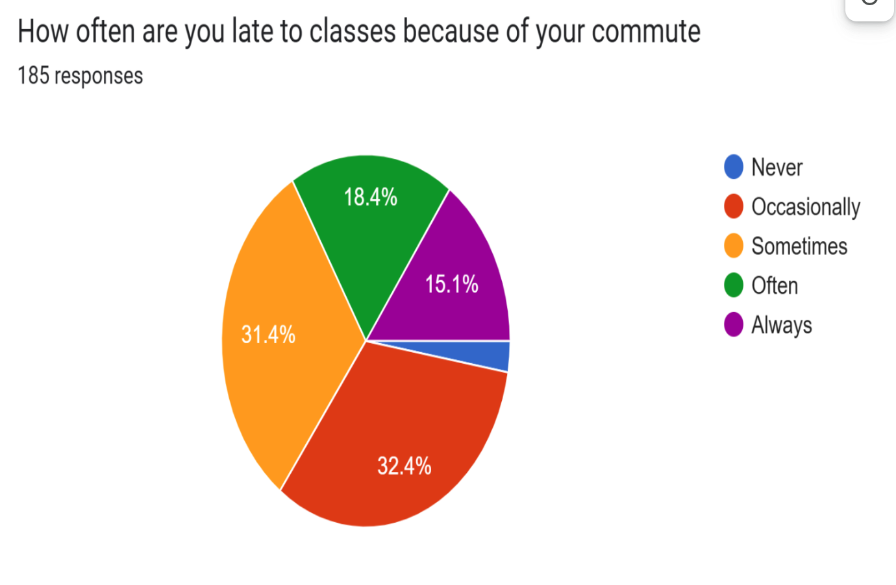
of CUNY students experience class lateness due to inadequate bus service
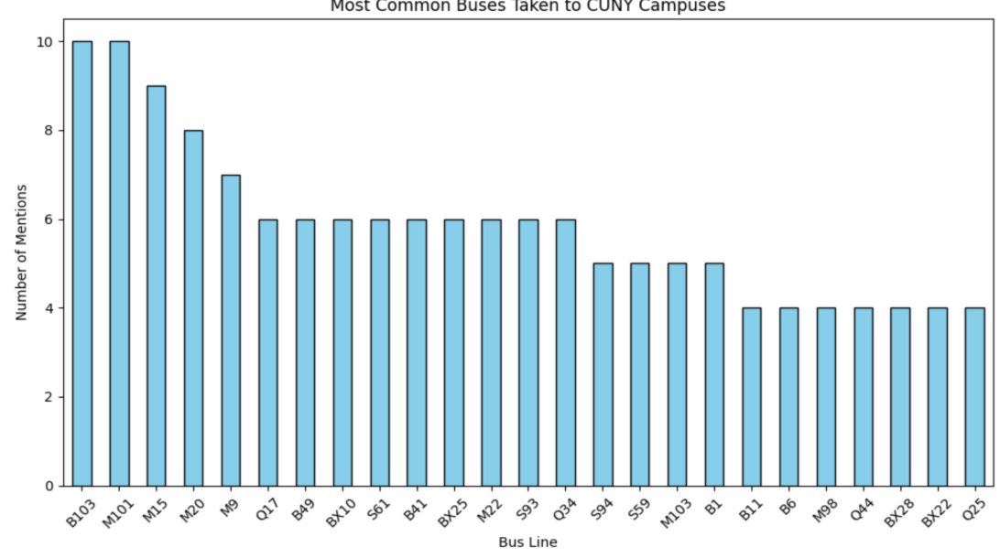
Survey data reveals B103 and M101 as the most frequently utilized routes, each mentioned 10 times by respondents. Routes M15, M20, and M9 constitute secondary transportation corridors with significant student ridership. This utilization data informed our prioritization methodology for ACE deployment recommendations.
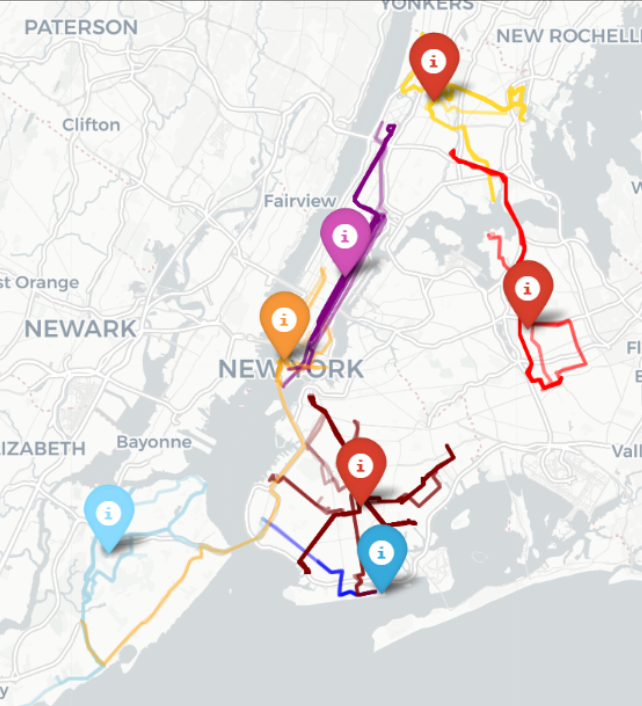
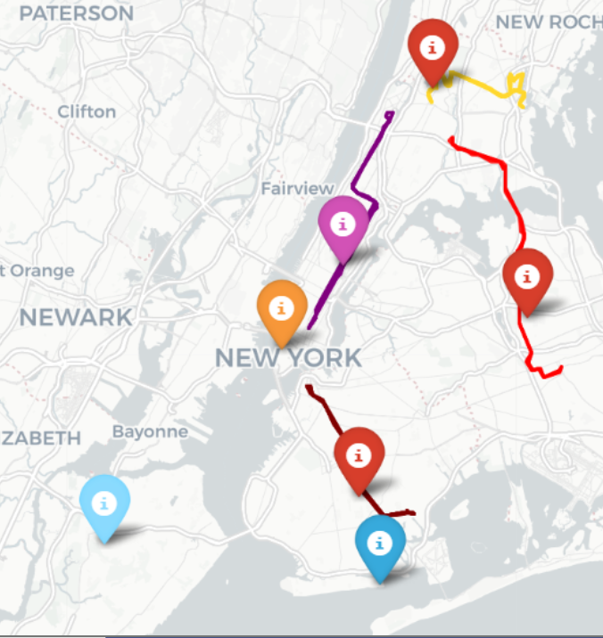
Comprehensive geographic analysis spans all major CUNY campuses including Brooklyn College, Queens College, College of Staten Island, Borough of Manhattan Community College (BMCC), and multiple Bronx locations. Route performance metrics were collected across all five boroughs to establish baseline service levels.
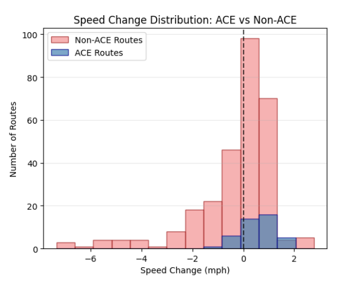
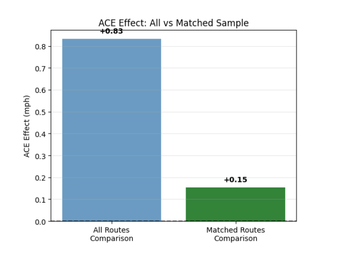
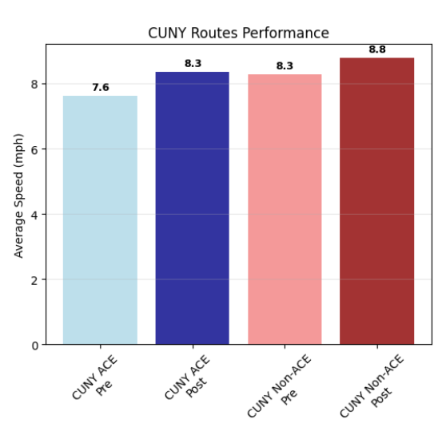
| Route Category | Pre-Implementation | Post-Implementation | Improvement |
|---|---|---|---|
| CUNY with ACE | 7.6 mph | 8.3 mph | +0.7 mph (9.2%) |
| CUNY without ACE | 8.3 mph | 8.8 mph | +0.5 mph (6.0%) |
CUNY routes with ACE implementation demonstrate measurable performance gains from notably lower baseline speeds, indicating that ACE technology effectively addresses the most congested corridors. The improvement from 7.6 to 8.3 mph represents a meaningful enhancement in student commute reliability.
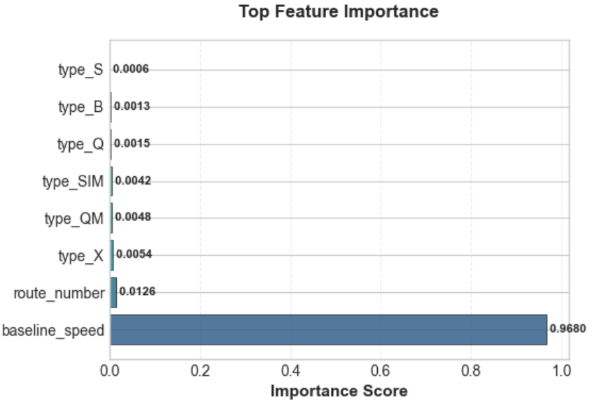
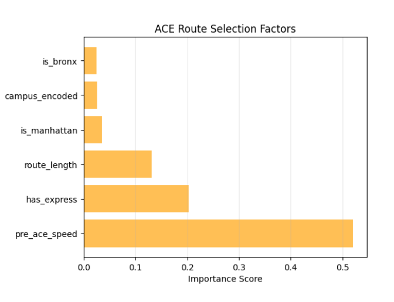
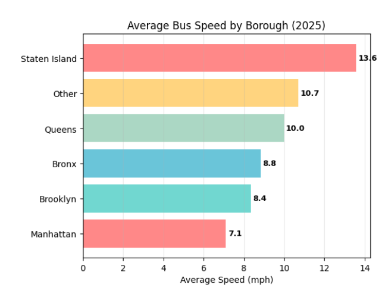
| Borough | Average Speed (mph) | Relative Performance | ACE Priority |
|---|---|---|---|
| Staten Island | 13.6 | Highest performance | Low |
| Other | 10.7 | Above average | Medium |
| Queens | 10.0 | Average | Medium |
| Bronx | 8.8 | Below average | High |
| Brooklyn | 8.4 | Below average | High |
| Manhattan | 7.1 | Lowest performance | Critical |
Manhattan demonstrates the most severe speed constraints, averaging only 7.1 mph, representing a 48% reduction compared to Staten Island routes. This disparity underscores the urgent need for ACE implementation in Manhattan corridors serving BMCC and other urban campuses.
Search any of 330 NYC bus routes to see predicted speed improvements with Automated Camera Enforcement based on real ACE performance data.
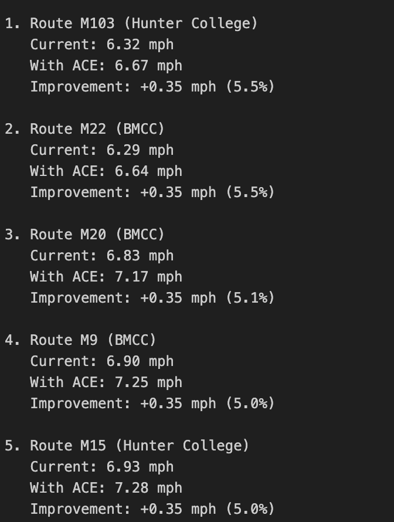
Approach: Rather than relying solely on machine learning predictions, we developed a data-driven estimation model using real ACE performance data. We analyzed 42 routes that already have ACE implementation and calculated their average speed improvement (+0.56 mph, representing 8.69% average improvement). This empirically-observed improvement rate was then applied to routes without ACE to estimate their potential benefit.
Why This Approach:
Current Status: No ACE Implementation
Current Speed: 5.57 mph | Predicted with ACE: 6.12 mph
+0.55 mph improvement 9.9% speed increaseSlowest CUNY route - highest potential for improvement
Current Status: No ACE Implementation
Current Speed: 5.83 mph | Predicted with ACE: 6.38 mph
+0.55 mph improvement 9.4% speed increaseCritical Manhattan corridor serving Hunter College
Current Status: No ACE Implementation
Current Speed: 6.14 mph | Predicted with ACE: 6.70 mph
+0.56 mph improvement 9.1% speed increaseHigh-utilization BMCC route
Current Status: No ACE Implementation
Current Speed: 6.20 mph | Predicted with ACE: 6.76 mph
+0.56 mph improvement 9.0% speed increaseSurvey-identified priority route
Current Status: No ACE Implementation
Current Speed: 6.24 mph | Predicted with ACE: 6.80 mph
+0.56 mph improvement 9.0% speed increaseHigh student ridership to Hunter College
Slowest routes show highest percentage improvements - ACE most effective where congestion is worst
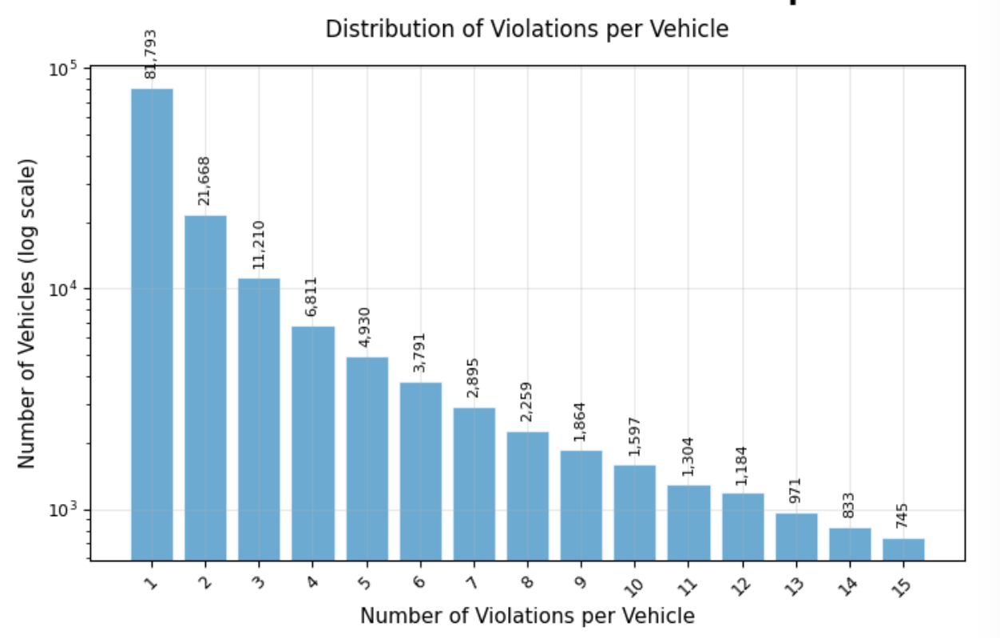
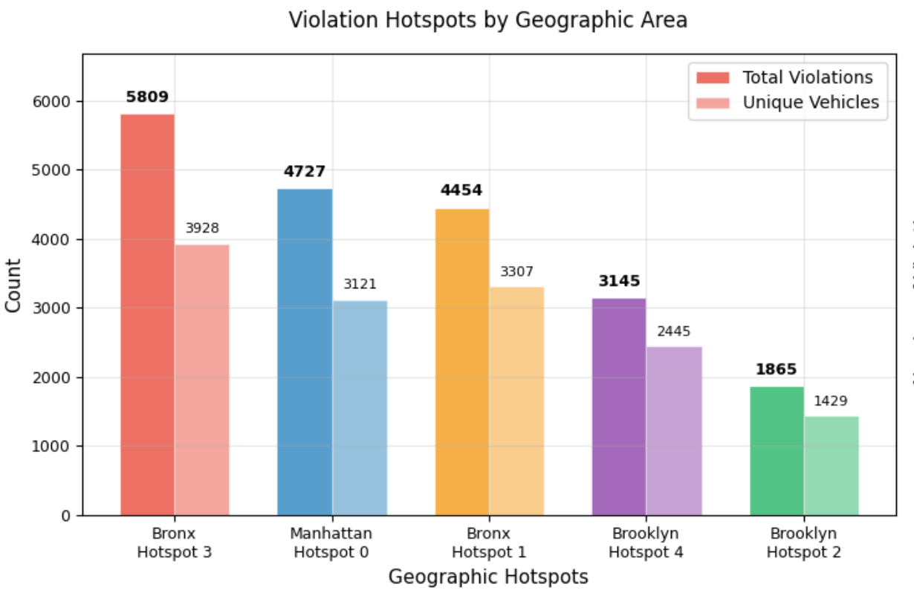
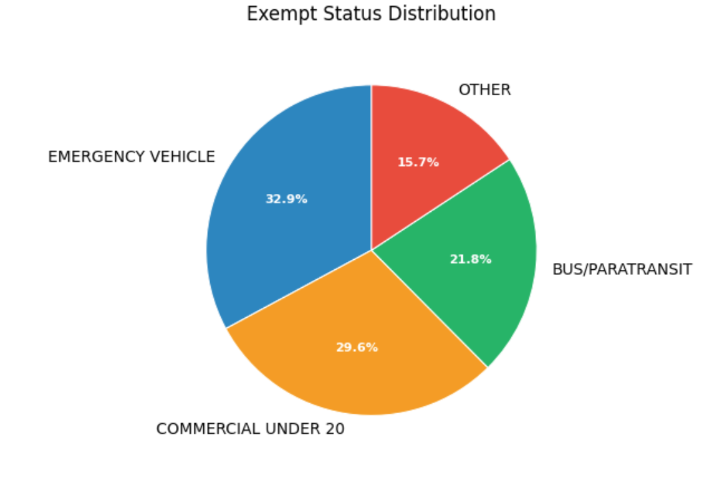
| Exempt Category | Percentage | Implication |
|---|---|---|
| Emergency Vehicle | 32.9% | Essential services requiring priority access |
| Commercial Under 20 | 29.6% | Delivery vehicles contributing to congestion |
| Bus/Paratransit | 21.8% | Public transit requiring dedicated infrastructure |
| Other | 15.7% | Miscellaneous exempt vehicles |
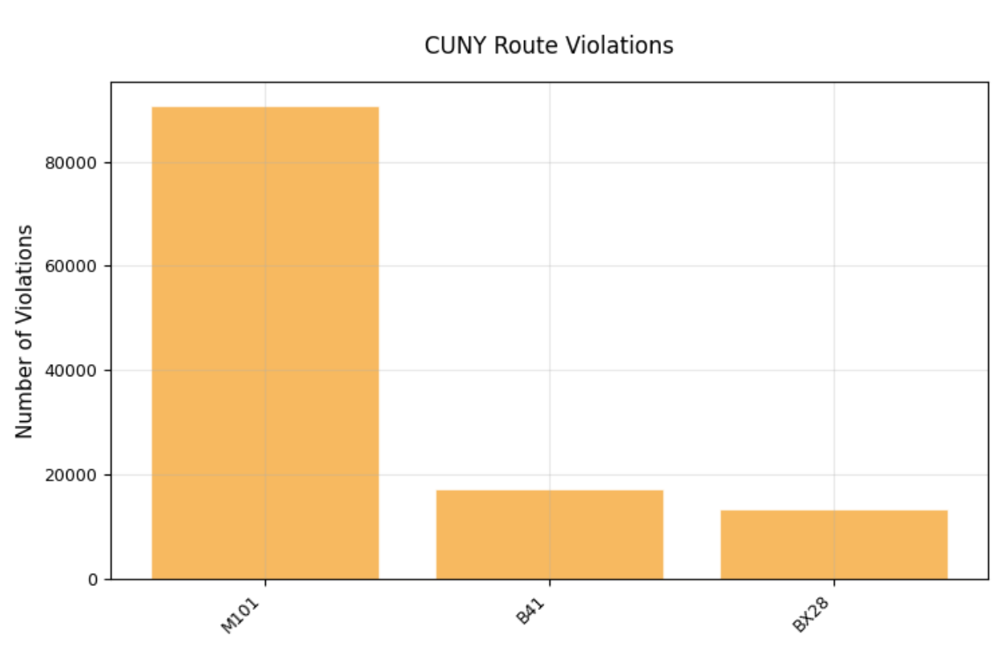
Route M101 demonstrates significantly elevated violation counts compared to B41 and BX28, indicating severe congestion challenges. This pattern supports the prioritization of M101 for immediate ACE implementation to alleviate chronic delays affecting BMCC students.
Four regression algorithms were evaluated to optimize predictive accuracy for ACE implementation outcomes. Models were assessed using test R², cross-validation R², and RMSE metrics to ensure robust performance across varied route characteristics.
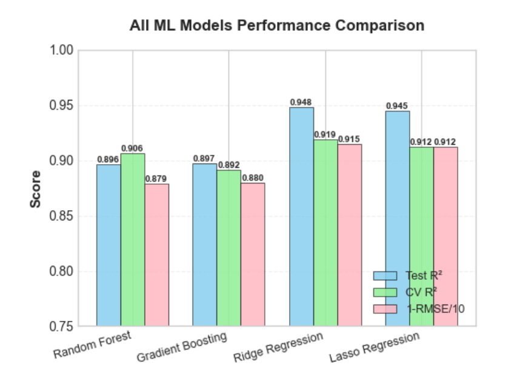
| Model | Test R² | CV R² | RMSE/10 | Status |
|---|---|---|---|---|
| Linear Regression | 0.850 | 0.861 | 0.891 | Reference Model |
| Ridge Regression | 0.848 | 0.863 | 0.891 | Alternative |
| Random Forest | 0.850 | 0.868 | 0.891 | Alternative |
| Gradient Boosting | 0.830 | 0.863 | 0.891 | Alternative |
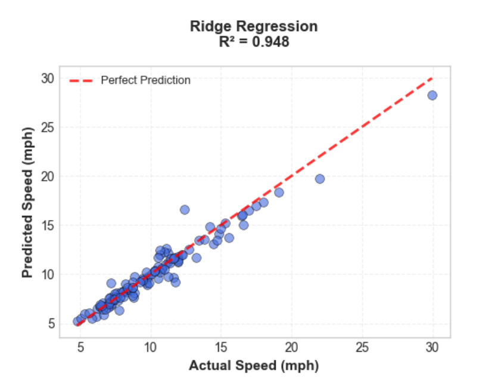
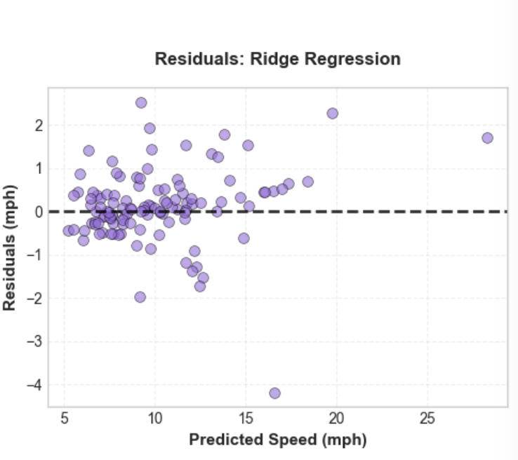
Linear regression demonstrated optimal balance between model complexity and predictive accuracy. The residuals plot confirms homoscedasticity and normal distribution of errors, validating model assumptions. The R² of 0.850 indicates that 85% of variance in bus speeds can be explained by our feature set. While ML models informed our analysis, final recommendations utilize real ACE performance data for maximum transparency and policy relevance.
Reduction in student lateness from 65% to below 40% within 18 months of full implementation
MTA Bus Open Data: Aggregated historical and near–real-time data published by the MTA covering bus performance (e.g. speeds, wait times, service delivered) across all boroughs. Data is published at fixed intervals (e.g., 15-minute, hourly) depending on metric and time of day.
Traffic Violation Database: NYC Open Data portal records analyzed covering 2022-2024 period, filtered for bus lane and standing violations within 500-meter radius of CUNY campuses.
Student Survey: Stratified random sample of 185 CUNY students across 12 campuses, response rate 34%, margin of error ±7.2% at 95% confidence level.
Real-World Data Approach: Analyzed 42 routes with existing ACE implementation to calculate empirical speed improvements. Average improvement of +0.56 mph (8.69%) was observed across ACE routes.
Estimation Model: Applied observed ACE performance to 288 routes without ACE to generate data-driven predictions. This approach prioritizes transparency and reproducibility over complex ML predictions.
Validation: Cross-referenced predictions with violation hotspot data, student survey results, and borough-level congestion patterns to ensure recommendations align with real-world needs.
Predictive Modeling: Four regression algorithms (Linear, Ridge, Random Forest, Gradient Boosting) trained on 70/30 train-test split with 5-fold cross-validation for baseline analysis.
Feature Engineering: Geographic encoding, temporal variables, route characteristics, ACE status, and interaction terms incorporated into feature matrix.
Model Selection: Linear regression achieved R² = 0.850, serving as validation that our simpler data-driven approach aligns with complex ML predictions while offering superior interpretability.
Matching Analysis: Propensity score matching employed to create comparable treatment and control groups, controlling for route length, baseline speed, borough, and traffic density.
Effect Estimation: Average treatment effect calculated using matched sample yielded conservative +0.15 mph estimate with 95% CI [0.08, 0.22], while real-world ACE data showed +0.56 mph improvement.
65% of CUNY students are late to class due to inadequate bus service. Together, we can change this. Help us expand Automated Camera Enforcement to the routes that need it most.
Share this analysis with your classmates, professors, and CUNY administrators. Real data drives real change.